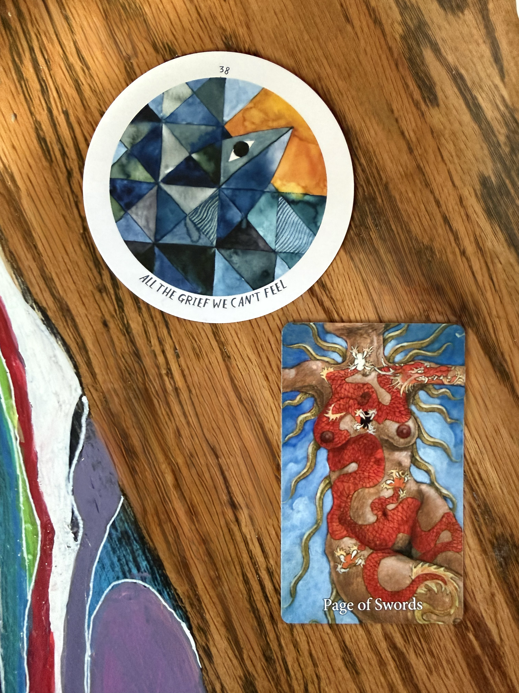
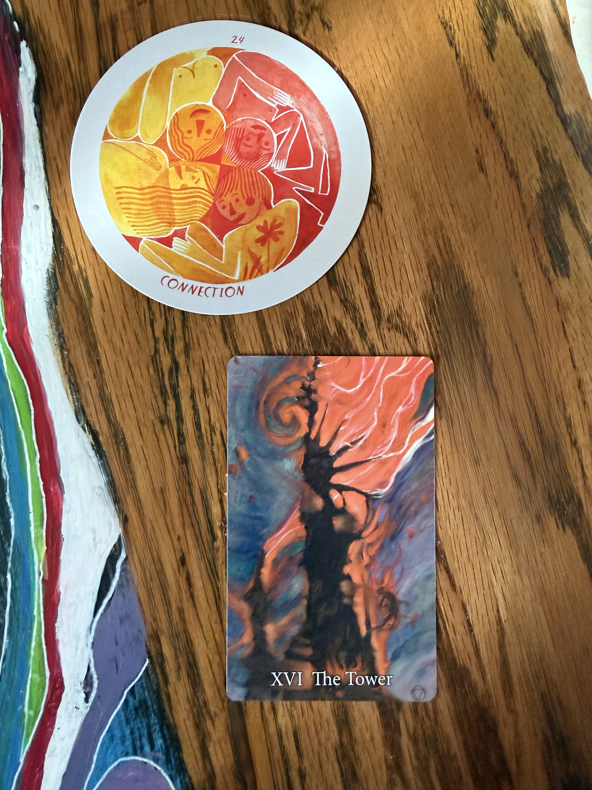
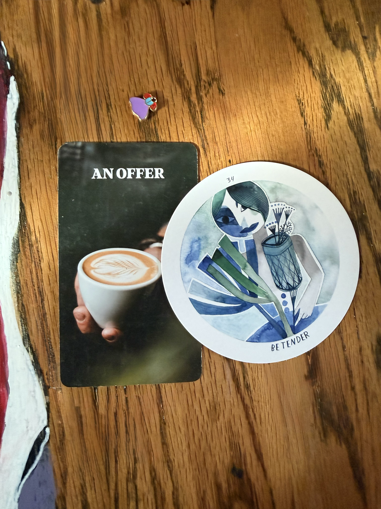
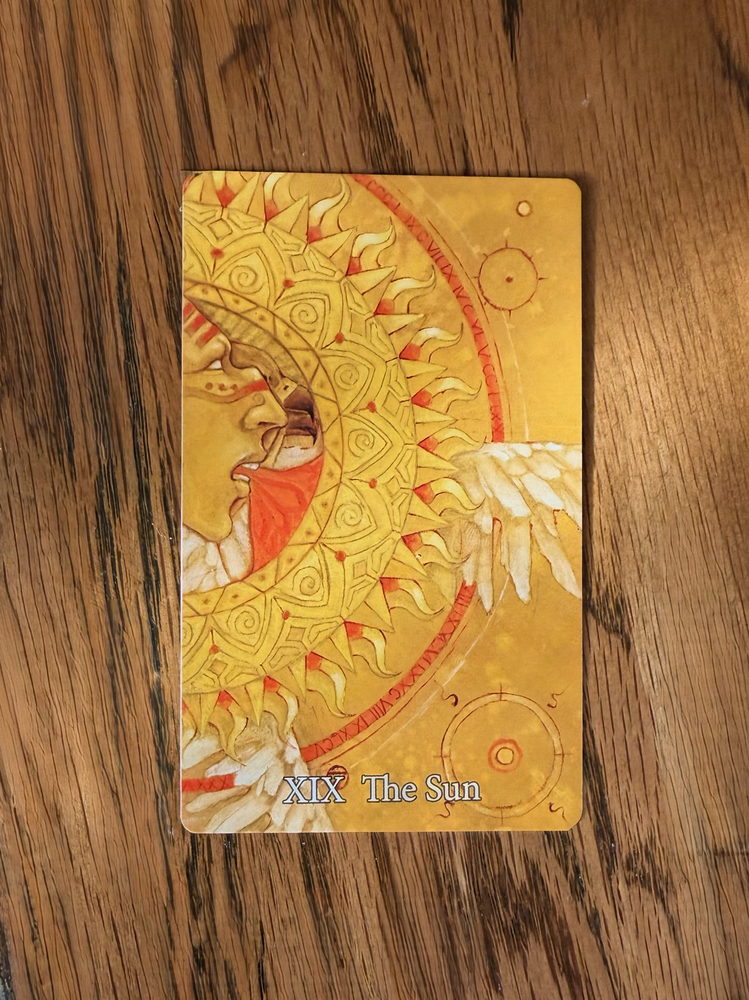

SIBYLHAUS
Personal Tarot Guidance
Leo • Situationship Clarity • Female
A significant number of major arcana cards appeared in this reading, indicating that something pivotal has recently occurred in your situationship. This is not a small matter—the cards are speaking to a moment of real importance and transformation.
Devastation & Grieving
Focused on Person B
Passionate Determination
Ready to Resolve
Hidden Potential
The Sun Card ☀️
Reignited Passion
Current Emotions: The cards show devastation and grief. This isn't just sadness, you are mourning. You're caught in a loop, checking on the other person's socials, unable to fully let go. You don't feel ready to explore connections with anyone else because your attention is entirely fixed on Person B.
Your Thoughts: Your mind is consumed with this situation. They occupy your mental space, and there's a sense of deep longing and attachment despite the situationship label.

Page of Swords & All the Grief We Can't Feel
Their Feelings: While similar to yours in some ways, Person B carries an explosive, passionate energy. They feel strongly that this situation will be resolved. They're determined and have conviction that whatever the issue is, it will be fixed, and they will ensure that that happens.
Their Thoughts: They believe they have the tools to fix this.. maybe they know what needs to be said, or they feel equipped to make the next move. Person B is coming toward you, ready to bridge the gap.

The Tower & Connection
This connection might be characterized by a "right under your nose" dynamic. One or both of you may have been preoccupied with other things, missing the potential that was already there. Perhaps what seemed invisible is now becoming visible. The foundation is solid, even if it took time to recognize it.

An Offer & Be Tender
The Sun is a profoundly positive card, and notably, it's your card as a Leo. This guidance tells you that clarity is coming. Things that have been in shadow will be illuminated. You will gain more understanding as time moves forward. The Sun promises warmth, clarity, success, and positive outcomes. It's the universe's way of saying: more light will be shed on this situation.

The Sun - Your Leo Card
The cards show that you two will figure this out. The outcome suggests that passion will be reignited between you. This is not a guaranteed timeline but the energetic direction is clear: you're moving toward reconciliation and renewal of this connection.
The cards emphasize one crucial piece of guidance: If you receive an invitation to go somewhere and you're interested in seeing this person, GO. This could be:
The oracle cards suggest that Person B is ready to approach you directly, possibly with flowers, a romantic gesture, or simply by showing up. There's also a possibility it happens at a mutual friend's gathering or home environment. The key is: be open, SAY YES, and allow the connection to unfold naturally in person.
The cards indicate there's something musically connected between you two. Whether it's a shared song, or artist, music plays a role, especially with Person B.
The universe speaks through numbers. These appear frequently in your reading and likely resonate with you or your situation:
Number 10 is particularly significant in numerology because it represents completion of a cycle and the beginning of a new one. This aligns with the reading's message that you're moving toward resolution.
The oracle cards also indicated something about getting out of the house. This reinforces the message: don't isolate. When opportunities come to be social and visible, take them. Movement, change of scenery, and social engagement are all part of what the universe is nudging you toward.
Take time to sit with these questions and journal your answers:
Mychael, the cards show that both you and Person B want the same outcome, and that's powerful.
The Sun card is your north star here. It promises illumination, warmth, and positive clarity. While you may feel devastated now, remember that this is a moment of shadow before the light breaks through.
Trust the process. Say yes to the invitation.